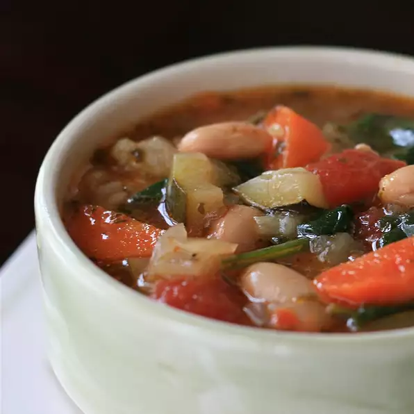

Tuscan Bean Soup

Description:
A simple yet delicious soup that can be enjoyed year round. Good source of protein.
Ingredients:
- 1/4 cup olive oil
- 4 chopped carrots
- 2 chopped celery stocks
- 4 crushed garlic cloves
- 2 sliced zucchini
- 4 (14 ounce) cans of vegetable stock
- 1 (15 ounce) can of cannellini beans
- 1 (14 ounce) can chopped tomatoes
- 1 cup chicken stock
- 1/4 cup pesto
- salt and ground black pepper
- 1 tablespoon of olive oil
- 1 (16 ounce) bag of fresh spinach
Steps:
- Heat 1/4 cup olive oil in a large stockpot over medium heat
- Saute onion, carrots, celery, and garlic until lightly browned (about 10 minutes)
- Add zucchini and cook until slightly soft (3 to 4 minutes)
- Stir vegetable stock, cannellini beans, chopped tomatoes, chicken stock, and pesto into vegetable mixture, and bring to a boil
- Reduce temperature to medium-low heat and simmer until vegetables are tender (30 to 35 minutes)
- Salt and pepper
- Heat 1 tablespoon olive oil in a large skillet over medium heat
- Saute spinach until wilted (about 5 minutes)
- Spoon sauteed spinach into each serving bowl